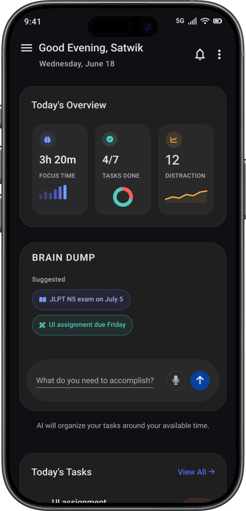

58%
58% of the workday can go to managing work instead of doing it.
Asana — Anatomy of Work
58% of the workday can go to managing work instead of doing it.
Asana — Anatomy of WorkBetter processes could recover 4.9 hours of work time each week.
Asana - Anatomy of WorkPlanned completion took 33.9 days. Actual completion took 55.5.
Buehler, Griffin & Ross, 1994The workload wasn't the problem. Deciding what deserved my attention was.
I explored existing productivity tools hoping they would reduce planning effort.
The tools organized tasks. They never reduced decisions.
Minimal interfaces that only show what matters right now.
AI handles complexity while the user remains in control.
Guidance instead of guilt.
Schedules adapt to real life.
Your information stays on your device.
Plex turns your tasks, goals, and time into a plan that works around your day.



Every screen went through multiple iterations before reaching its final form. Each redesign solved specific usability problems rather than simply improving aesthetics.


Design iterations created throughout
the development of Plex.


Make it exist first.
Make it good later.
Version One intentionally focuses only on solving the core problem. The roadmap reflects a gradual expansion of intelligence.
The long-term direction is to bring Plex to desktop, evolving it from an intelligent planner into a more proactive system that can understand context and take action across your workflow.
Brain Dump transforms unstructured thoughts into organized, actionable tasks.
Plans are created around real life instead of ideal conditions.

Long-term ambitions become manageable through gradual, consistent progress.

Progress is measured through consistency, not pressure.


Productive days begin with sustainable routines and proper recovery.

Your plans, preferences, and personal data remain on your device.

Meet the AI in Plex. Every schedule begins with understanding before planning.
Every recommendation begins with understanding your personal context.
Priorities are evaluated before time is assigned.
Plans are created around real life instead of ideal conditions.
Productivity should never come at the expense of recovery.
Every schedule is generated locally through Plex's intelligence, combining your goals, routines, and priorities into a realistic plan designed around your life.
Plex was built through close collaboration between product design and AI engineering. Clear responsibilities allowed both disciplines to contribute their expertise while building a single cohesive product.
Together, product design and AI engineering transformed Plex from an idea into a fully functioning product.